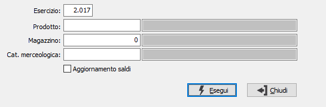

Controlli saldi prodotti
Il programma effettua un controllo di congruenza fra i movimenti di magazzino ed i valori progressivi di ciascuna articolo/magazzino, eventualmente ricostruendo i valori.

E' necessario fornire il numero dell’esercizio per cui si vuole eseguire il controllo; inoltre è possibile specificare un singolo prodotto, un singolo magazzino (anche in combinazione) oppure una categoria merceologica. Se la casella "Aggiornamento saldi" è spuntata, oltre il normale controllo viene effettuato anche l'aggiornamento dei progressivi per quanto elaborato.